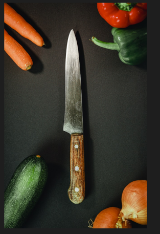

About Us
Oro Noir is a family business which only uses the freshest ingredients. We aim to provide a dining experience with big flavours and a good atmosphere.

Our History
The restaurant opened in 1990 and has been making our customers happy every day.